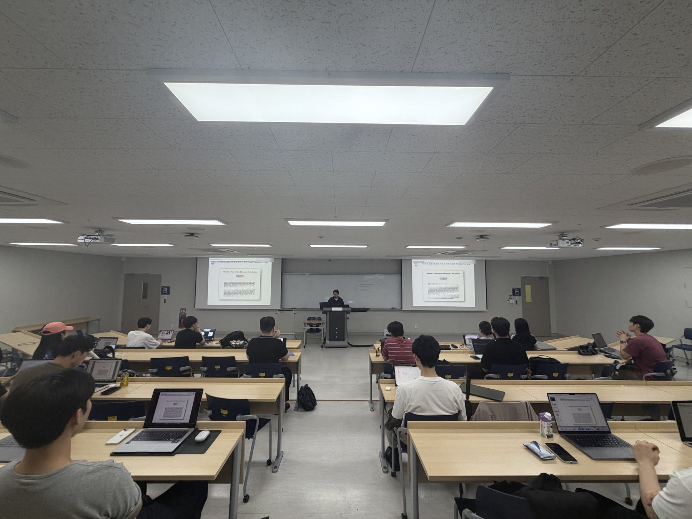
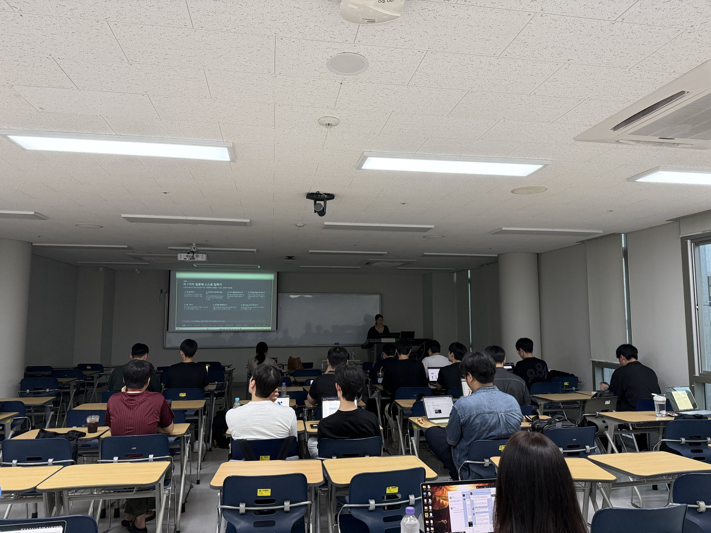
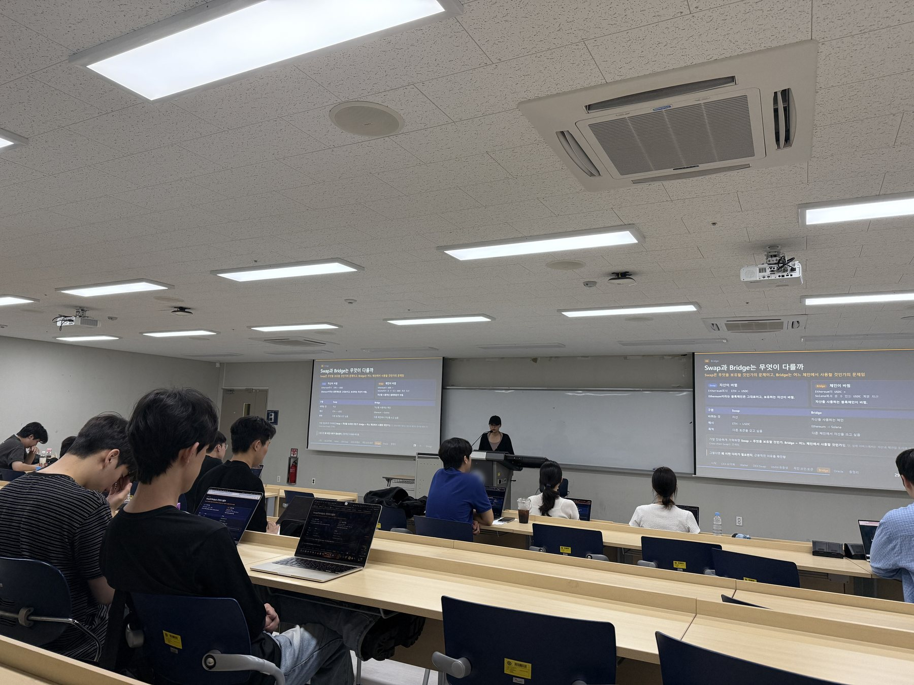

가르친 것
Onboarding Sessions
블록체인을 처음 접하는 학회원을 위해 진행한 5회의 입문 과정입니다.
매주 주제를 직접 공부하고 핵심 개념과 설명 순서를 구성한 뒤, Claude Code를 활용해 HTML 발표 자료로 구현했습니다.
5회차 담당
20~30명 수강
매주 목 1교시
직접 구성 / AI 활용
회차별 자료
01
블록체인 개괄
비트코인 백서에서 출발해 블록·체인·합의가 왜 필요한지까지
자료 열기 →
2026.07.23
02
합의 알고리즘
PoW와 PoS의 작동 방식, 그리고 속도를 내주고 얻은 것
자료 열기 →
2026.07.30
03
DEX · 브릿지 · 오라클
CEX와 무엇이 다른지, 체인 사이와 바깥은 어떻게 잇는지
자료 열기 →
2026.08.06
05
RWA · STO · 스테이블코인
실물자산이 체인 위로 올라올 때 무엇이 달라지는지
준비 중
2026.08.20
06
주요 메타 프로젝트
퍼프·예측시장·AI 등 지금 움직이는 흐름들
준비 중
2026.08.27
04회차는 다른 담당자가 진행해 목록에서 뺐습니다.
강의 기록


